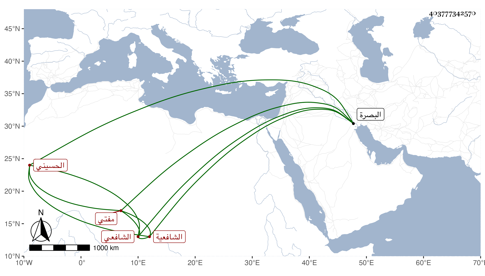

0902Sakhawi.DawLamic.ITO20230111-ara1.EIS1600.403777342570
Biography ID: 403777342570
1316
يونس بن محمد الكمال بن التاج الحسيني الشنيكي الجوبري الشافعي مفتي الشافعية بتلك البلاد كلها . قال الطاوسي صحبته سفرا وحضرا فاستفدت منه كثيرا وأجاز لي وأذن لي بالإفتاء بل أمرني وأنا معه بالبصرة بالكتابة على سؤال جيء به إليه فامتثلت وذلك في سنة تسع عشرة .
